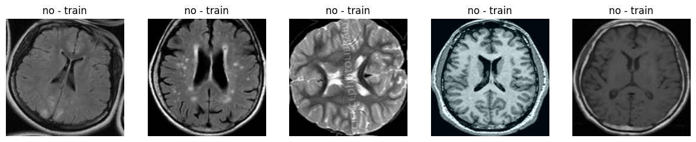
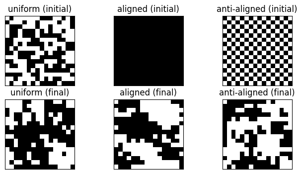
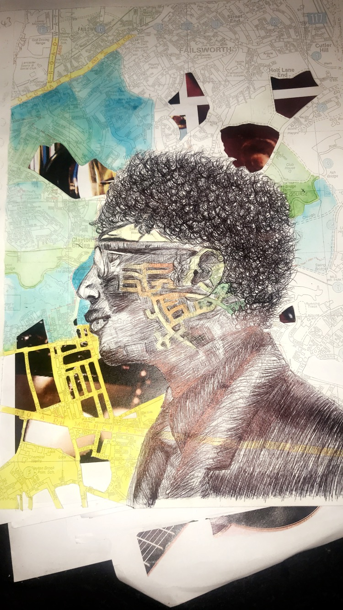
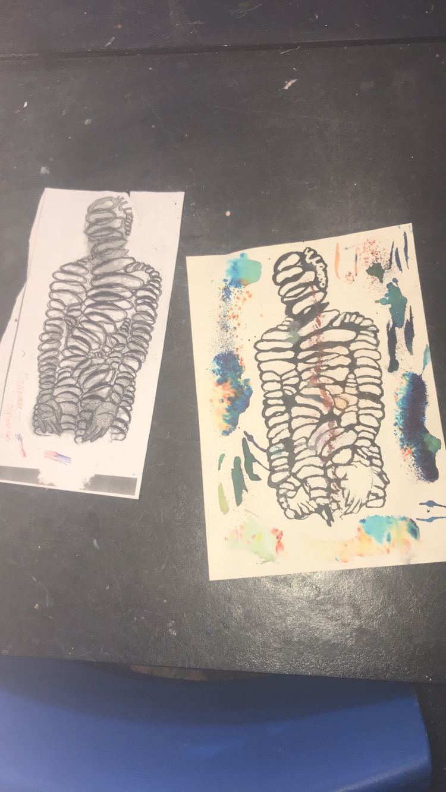
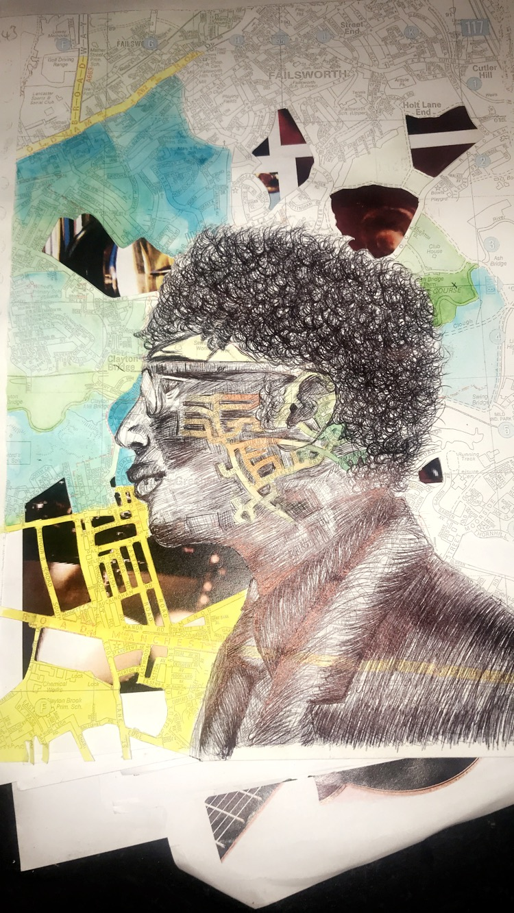
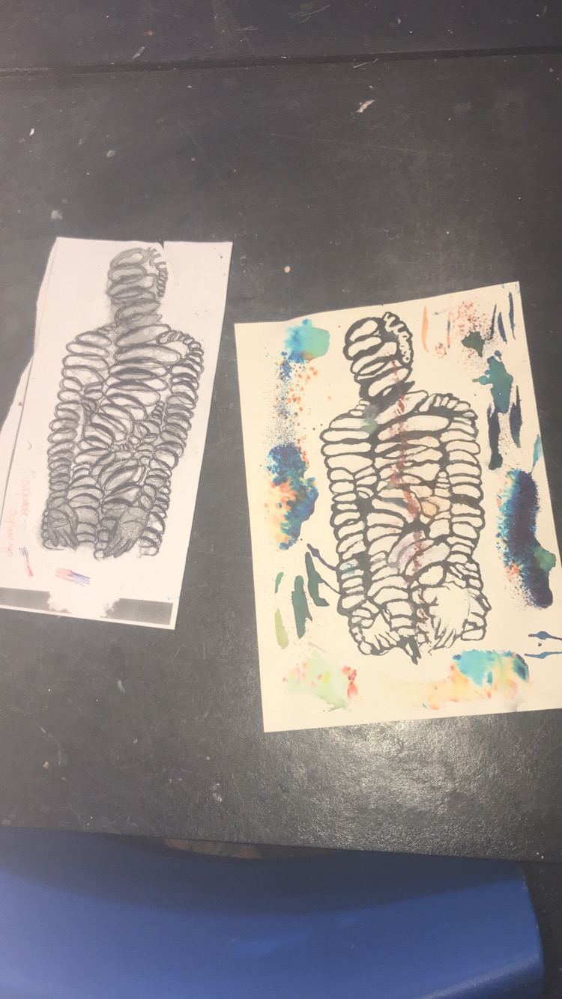

Abdalla Abdalla
Data Scientist and Machine Learning Engineer
About Me
Hi, I'm Abdalla, a passionate Data Scientist with a Bachelor's degree in Physical Natural Sciences from the University of Cambridge. I have extensive experience in machine learning, data analysis, and AI, with a strong focus on leveraging data-driven insights to solve complex problems.
Skills
Programming Languages
Python, SQL, R, MATLAB, HTML, JavaScript, CSS
Tools
Power BI, Tableau, Git, VS Code, Visual Studio, PyCharm, Jupyter Notebook, Streamlit
Libraries
NumPy, pandas, Matplotlib, SciPy, scikit-learn, TensorFlow, Keras, XGBoost, OpenCV
Machine Learning Skills
Neural Networks, Natural Language Processing (NLP), Supervised and Unsupervised Learning, Model Evaluation and Validation, Data Preprocessing and Augmentation, Monte Carlo Simulations, Sentiment Analysis, Generative AI
Experience
Data Science Intern
Thornton Tomasetti | Warrington, United Kingdom | July 2023 – September 2023
- Role Description: Leveraged a unique combination of technologies and expertise to engineer practical solutions to problems of national and international importance. Applied expertise in solid and fluid dynamics, materials science, acoustics, risk assessments, and computational simulation methods to solve complex problems.
-
Responsibilities and Achievements:
- Developed a probabilistic assessment framework using Monte Carlo simulations and uncertainty quantification techniques with Python and MATLAB.
- Enhanced the precision of risk assessments in engineering applications through advanced machine learning methods.
- Performed time series forecasting and developed Bayesian networks for fire analysis in retail industrial complexes, significantly improving predictive accuracy and risk management strategies.
- Utilized scikit-learn for regression analysis, achieving a 22% improvement in the predictive accuracy of structural failure probabilities.
- Initiated a data-driven culture focused on uncertainty quantification, effectively communicating complex data analyses to management and clients.
- Created comprehensive documentation on the Probabilistic Assessment Framework and presented it to potential users at the end of the internship.
Environmental Data Analyst Intern
Nuffield Foundation | Manchester, United Kingdom | June 2019 – November 2019
- Role Description: Led a project to capture and analyze satellite signals for advanced atmospheric and oceanic studies. Utilized signal processing and data analysis techniques to improve the quality of meteorological analysis.
-
Responsibilities and Achievements:
- Captured and analyzed satellite signals using the electromagnetic spectrum for advanced atmospheric and oceanic studies, resulting in a 15% improvement in image resolution.
- Engineered and meticulously constructed wide-band antennas, optimizing data collection for superior signal clarity and reliability.
- Proficiently utilized Software Defined Radio and Wxtoimg to convert high-frequency electromagnetic signals into visual data, showcasing expertise in signal processing and the ability to transform raw data into actionable insights.
- Conducted in-depth analysis of complex datasets for meteorological predictions and climate change studies, leveraging statistical methods to extract meaningful insights.
- Presented research findings on satellite signal analysis and electromagnetic spectrum research to a broad audience, effectively communicating complex scientific concepts.
Projects
Tumor Track
Developed and implemented a Convolutional Neural Network (CNN) using TensorFlow for brain tumor detection, achieving an accuracy of 91% with a precision of 85% and recall of 91%, demonstrating strong performance in distinguishing between tumorous and non-tumorous MRI images.
Amazon Product Recommendation App
Created a recommendation system using NLP techniques and a TF-IDF Vectorizer to suggest products based on user input prompts. Implemented sentiment analysis with TextBlob and used generative AI with BART for generating concise summaries of product reviews to enhance user experience and decision-making.
Now You See Me, Now You Don’t

Implemented a real-time face detection and tracking system using TensorFlow and VGG16. Built a deep learning model with dual heads for classification and regression tasks, highlighting expertise in model architecture and multi-task learning.
Ising Model
Conducted a comprehensive study on Monte Carlo techniques to explore the behavior of the two-dimensional Ising model and compare the performance of Metropolis-Hastings and Wolff Cluster algorithms. Optimized simulation efficiency, reducing critical slowing down.
Artwork
 



Get in Touch
Feel free to reach out if you have any inquiries or would like to inform me about potential opportunities.